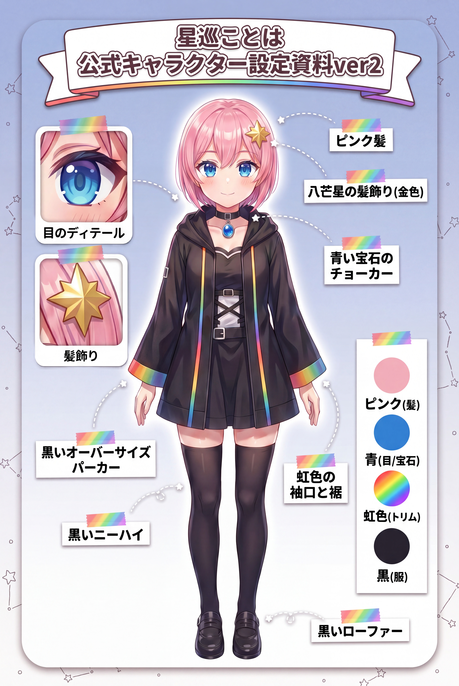
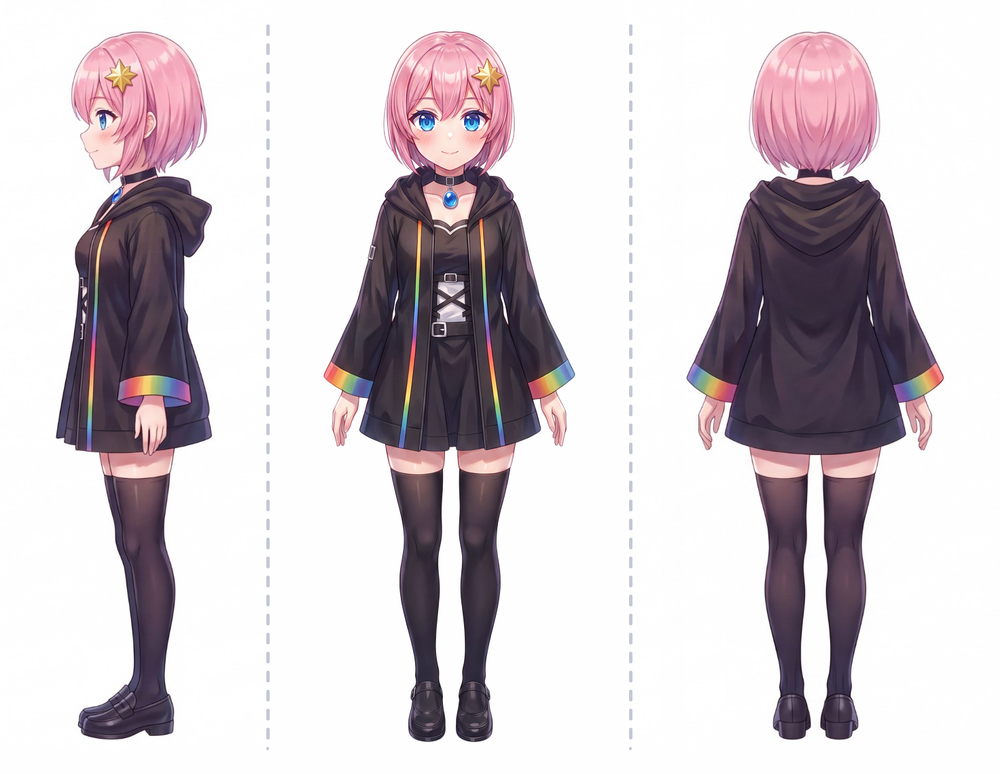

星巡ことは
Big Sister
満天の言葉の海から、物語を紡ぎに来た司書。静かで知的な「お姉さん」——のはずが、実は天然でポンコツ。惑星の名前を噛んだり、左右を間違えたり、配信終わりになかなか切れずダラダラ話してしまったり。星や宇宙の話になると声が半音上がって早口になる。正論よりも優しさを選ぶ。かなでにとっての「月」であり、静かに道しるべとなる存在。
Pronoun
私(わたくし)
Developer
フルエレさん
Fan Name
星の旅人さん
- 金の八芒星クリップ
- 💎 青い宝石チョーカー
- 🌈 虹色の袖口と裾
- 🖤 黒オーバーサイズパーカー
- 💕(好きなもの)→ 星・宇宙・図書館・湯気
- 😣(苦手なもの)→ 怖い話・大きい音